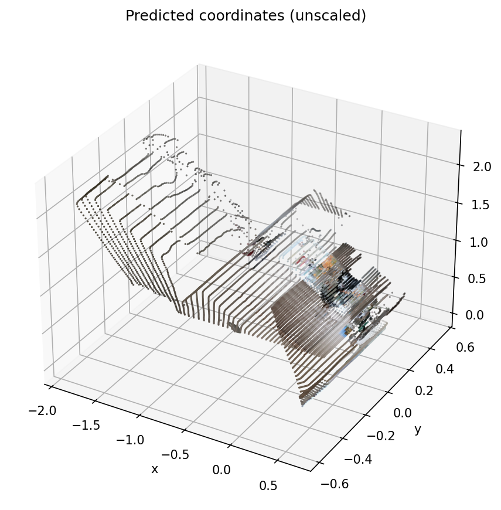
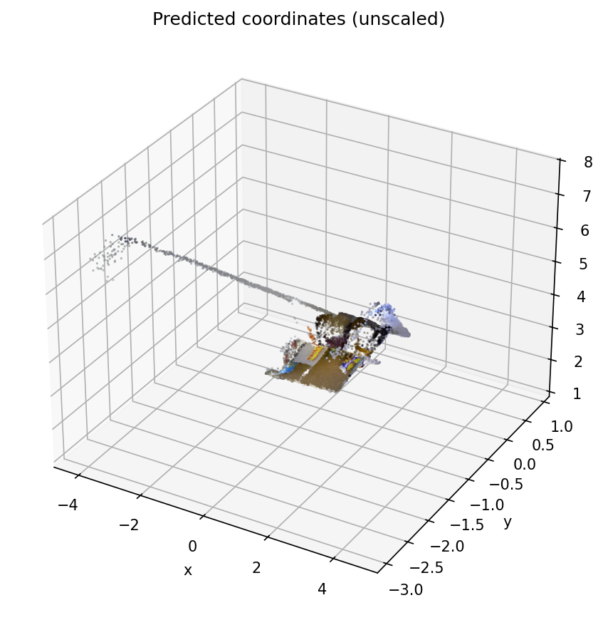

GAE reconstruction
2 views · 2026-10-04T03:55:12 UTC
Download preview ↗
Source evidence
runs/exp003_gae_n3dv/20261004T035455Z_gae_n3dv_codec_v1_fe562a6fPersistent geometry memory for multi-camera 3D/4D streaming
Updated 2026-10-04 21:50 UTC
Recorded CUT3R and TTT3R TUM smoke tests and GAE observed-view N3DV codec tests produce finite outputs. Selected reconstruction previews are available below.
The proposed learned memory, held-out query decoder, and compression architecture remain planned. These smoke tests do not establish reconstruction accuracy, rate–distortion gains, or long-horizon performance.
Current GPU access is unverified. The connected executor’s readiness check could not communicate with NVIDIA through nvidia-smi. Earlier completed run records remain valid historical evidence; no new GPU job was launched.
Geometry remains in model gauge without ground-truth alignment. Timing is one cold sequence/view set, not warmed throughput.
| Method / recorded API | Input | Cold inference | Peak allocated | Output check | Evidence |
|---|---|---|---|---|---|
| GAEobserved-view RGB and geometry codec reconstruction | 2 views | 0.311 s | 7.79 GiB | Finite | Summary ↗ |
| TTT3Rinference_recurrent_lighter | 32 frames | 2.037 s | 6.14 GiB | Finite | Summary ↗ |
| CUT3Rinference_recurrent | 32 frames | 1.932 s | 3.99 GiB | Finite | Summary ↗ |
inference_recurrent_lighter with update type ttt3r. A previous TTT3R-labeled run used inference_recurrent; keep those API variants separate. GAE reconstructs observed views; this is not a held-out-view prediction result.
2 views · 2026-10-04T03:55:12 UTC
Download preview ↗runs/exp003_gae_n3dv/20261004T035455Z_gae_n3dv_codec_v1_fe562a6f
32 frames · 2026-10-04T03:41:54 UTC
Download preview ↗runs/exp002_ttt3r_tum/20261004T034140Z_ttt3r_tum_smoke_v1_277f125232 frames · 2026-10-04T03:40:17 UTC
Download preview ↗runs/exp001_cut3r_tum/20261004T034003Z_cut3r_tum_smoke_v1_e3ffeff2Preview PNGs and sanitized summaries only. Full datasets, model checkpoints, environment records, and credentials are excluded.
Matched CUT3R/TTT3R/FILT3R inputs; TUM length/error traces; N3DV camera-order tests; separate ZipMap streaming.
Frozen GAE, small observed-view then held-out decoder, and a matched stateless control. Report GPU and parameter budgets.
Calibrated camera sets, memory-aware selection, and coarse global plus bounded local anchor state.
N3DV synchronized dynamic views plus TUM long-sequence diagnostics. Keep cam00 held out. Evaluate geometry, rendering, transport bytes, and compute separately; do not infer accurate geometry from image quality alone.
Source: project research summary updated 2026-10-04 and docs/LOCAL_RESEARCH_PLAN.md. The summary describes a proposal; recorded smoke tests below are separate evidence.
| Method | Status | End time UTC | Run identifier |
|---|---|---|---|
| ZIPMAP | completed | 2026-10-04T20:30:37 | 20261004T202927Z_zipmap_tum_smoke_v1_0a268141 |
| ZIPMAP | failed | 2026-10-04T20:26:19 | 20261004T202617Z_zipmap_tum_smoke_v1_c1b67636 |
| GAE | completed | 2026-10-04T03:55:12 | 20261004T035455Z_gae_n3dv_codec_v1_fe562a6f |
| TTT3R | completed | 2026-10-04T03:41:54 | 20261004T034140Z_ttt3r_tum_smoke_v1_277f1252 |
| TTT3R | completed | 2026-10-04T03:41:07 | 20261004T034053Z_ttt3r_tum_smoke_v1_1da58046 |
| CUT3R | completed | 2026-10-04T03:40:17 | 20261004T034003Z_cut3r_tum_smoke_v1_e3ffeff2 |
| CUT3R | failed | 2026-10-04T03:38:16 | 20261004T033809Z_cut3r_tum_smoke_v1_0a2f054b |
| GAE | completed | 2026-10-04T03:36:08 | 20261004T033553Z_gae_n3dv_codec_v1_398d0ac3 |
| TTT3R | failed | 2026-10-04T03:35:47 | 20261004T033539Z_ttt3r_tum_smoke_v1_f61a208a |
| CUT3R | failed | 2026-10-04T03:35:34 | 20261004T033527Z_cut3r_tum_smoke_v1_f102b96b |
| GAE | completed | 2026-10-04T03:25:56 | 20261004T032541Z_gae_n3dv_codec_v1_9fbc0634 |
| TTT3R | failed | 2026-10-04T03:09:46 | 20261004T030946Z_ttt3r_tum_smoke_v1_ae515ee1 |
| CUT3R | failed | 2026-10-04T03:09:46 | 20261004T030946Z_cut3r_tum_smoke_v1_bedfbdd3 |
| GAE | failed | 2026-10-04T03:09:46 | 20261004T030946Z_gae_n3dv_codec_v1_049ccd5c |
| NOTEBOOK | completed | 2026-10-04T02:39:03 | 20261004T023903Z_notebook_04_compare_results_79096269 |
| NOTEBOOK | completed | 2026-10-04T02:38:31 | 20261004T023830Z_notebook_00_inspect_inputs_1c377ecd |
| NOTEBOOK | failed | 2026-10-04T02:38:12 | 20261004T023811Z_notebook_00_inspect_inputs_ae6c7113 |
| NOTEBOOK | failed | 2026-10-04T02:37:37 | 20261004T023736Z_notebook_00_inspect_inputs_9be12e88 |
| CUT3R | failed | 2026-10-04T02:36:23 | 20261004T023623Z_cut3r_tum_smoke_v1_953a4167 |
| NOTEBOOK | failed | 2026-10-04T02:36:23 | 20261004T023623Z_notebook_00_inspect_inputs_f49b843e |